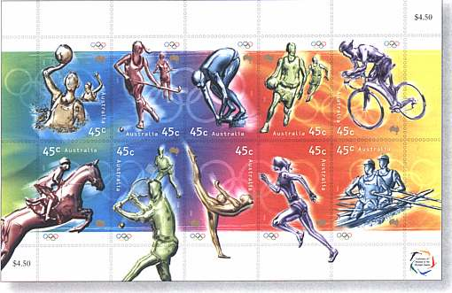
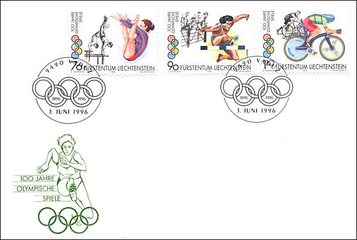

Impersonalized Stamps
from Australia
The Australian Post was the first to introduce the so-called personalized issues. As their names imply, the personalized issues are official issues of postal administration that allow for some personalization (individualization), usually through printing of images and/or texts on labels, attached to stamps that are valid for postage. Usually people send their photographs, that are than printed on the mentioned labels.
To celebrate the Games of the XXVII Olympiad, the Australian Post has issued the 17th August 2000 a sheetlet of ten stamps. Such stamps, issued by the countries that host the Olympiads, are always awaited with interest by the philatelic community, because these countries often try to present something nice and original. So let's take a more attentive look at the Australian sheetlet, presented below at 80% of its original size.

As published in the "Stamp Bulletin", Overseas Edition No. 256, August-September 2000, a philatelic magazine of the Australian post, on its page 2.: "The design by FHA Image Design, Melbourne, incorporates the Olympics Rings and uses fluid imagery to represent the athletes and communicate the emotion, energy and grace of the Olympic competition ... The illustrations extend beyond the body of the stamp into selvage."
Fluid imagery... Yes, for sure, reminding thrillers with gangsters, hiding their faces behind stockings. Have the Australian athletes some special reasons to hide their faces? I could even understand if they were shown upside down, as seen from the Northern Hemisphere, but why with fluid, alien faces and bodies? Have they taken a bath of translucent glue? This is the very reason why I propose here a new category, the Impersonalized Stamps, as opposed to the Personalized Stamps, introduced by the same Australian Postal Authority.
Just to notice that the sheetlet is sold only as a whole, so that collectors interested in only one sportive discipline are obliged to buy the entire unit. Unfortunately this is a practice that is used worldwide for a long time, for obvious reasons. And even the Australians, who could take out what they need from the sheetlet and reuse the rest of stamps on covers, will still have a problem with the foot of the female athlete from the bottom row, second from the right. They will be challenged by two alternatives: Either to preserve only the athlete they like, but with a cut foot, or to take the athlete and both gentlemen rowing into the mentioned stamp. Tertium non datur...
Please see below an interesting set issued in 1996 by Liechtenstein. It commemorates the centenary of modern Olympic Games. The sportsmen in the background (100 years ago) and those in the foreground (today) display the usual characteristics of the human race, faces included.

Do you like this article? Or, on the contrary, you have serious objections. Make use of PASIC Forum to express your opinion or send an e-mail to its author.
| First
version: 8/27/00. Revised:
11/27/05. Copyright © 2000 by Victor Manta, Switzerland. All rights reserved in all countries. |
|
||